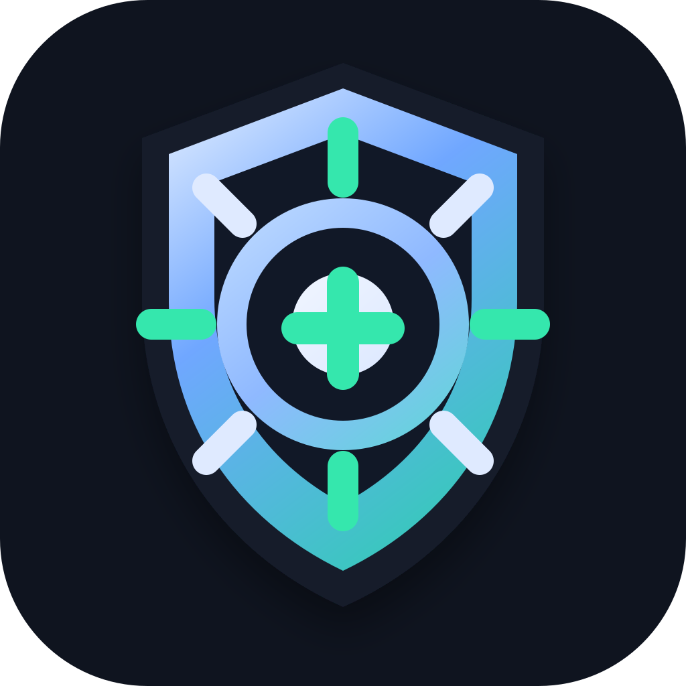

One-shot and continuous checks
Run Watch once from the desktop app or CLI, or use the new Watch command path for repeated local detection.

RMM Hunter DownloadWindows DFIR scanner for suspicious remote access tools, living-off-the-land traces, Watch Preview alerts, and endpoint trust signals.
RMM Hunter 0.3.0 is up to date.
Scanning
Complete5 grouped findings, 259 artifacts. Review evidence before cleanup.
What's new in v0.3.0
RMM Hunter now has an early always-on direction: local checkpoints, alert history, Discord test alerts, and guarded response actions that stay behind policy gates.
Run Watch once from the desktop app or CLI, or use the new Watch command path for repeated local detection.
Alerts are written to local JSONL and SQLite history, with a first remote alert sink for Discord webhooks.
Soft actions like evidence snapshots and Defender scans are available, while hard containment stays opt-in and gated.
AI can explain and choose from known action IDs only. It cannot run shell commands or override deterministic severity.
Evidence-first approach
RMM Hunter does not probe networks or exploit systems. It collects local artifacts, groups related signals, and explains why each finding deserves review.
Find known remote access tools through uninstall registry entries.
Review service paths, recent service creation, signatures, and user-writable locations.
Surface persistence points that could restart tools after reboot.
Look for encoded commands, hidden windows, download behavior, and WMI traces.
Import vendor traces and optional KAPE output for deeper DFIR context.
Review detections, remediation events, protection changes, code-signing trust, and roots.
Triage workflow
Use Scan for a careful snapshot, then Watch when the device needs short-term alerting while context is still being confirmed.
Collect local Windows artifacts and event logs where available.
See exact paths, services, task actions, event excerpts, and confidence labels.
Use local alert history, Discord test alerts, and policy-gated response actions for short-term monitoring.
Export JSON or PDF, confirm with the device owner or IT provider, then remediate with a documented timeline.
Defender reported a named threat and action. RMM Hunter preserves the event context so the next step is evidence-led.
An installer in Downloads or Temp may be benign, but it needs an owner, purpose, and timeline.
Low-severity context stays in the timeline without inflating the verdict by itself.
Trust by design
Security tools have to be boring in the right places. RMM Hunter is local-first, transparent, and approval-required by default.
Files are preserved by default. Preview response actions require policy approval and every action is recorded.
Reports stay on the device unless the user exports or shares them. Optional AI requires a user-provided provider key.
Rules, collectors, release workflow, docs, and verification instructions are public on GitHub.
GitHub releases include SHA256 checksums, a manifest, and a verification guide. Current beta binaries are unsigned.
Windows-first public beta
Use it as a careful second opinion after suspicious remote support, RMM abuse, or endpoint alerts. Version 0.3.0 adds Watch Preview and guarded active-response controls.